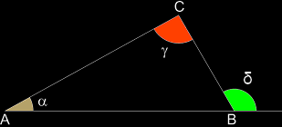
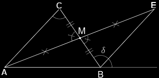
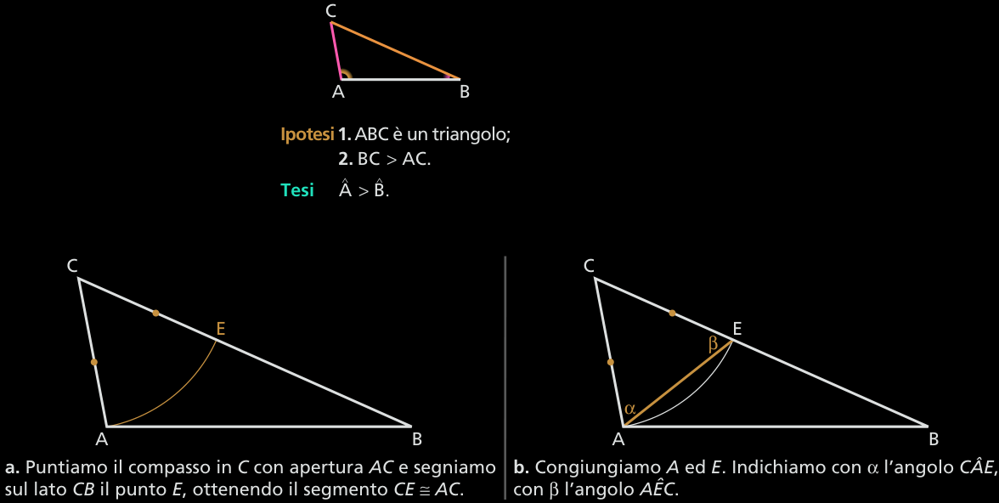
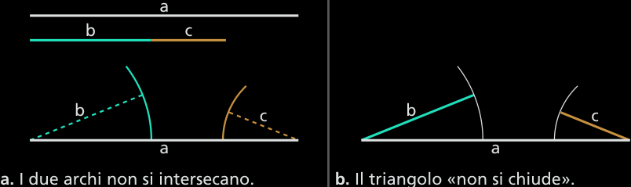

Le disuguaglianze dei triangoli
Il teorema dell'angolo esterno (maggiore)
Teorema 2.5.1. In un triangolo, ogni angolo esterno è maggiore di ciascuno dei due angoli interni non adiacenti a esso.
Ipotesi ABC è un triangolo.
Tesi δ > γ e δ > α.
Dim. Disegniamo il punto medio M del lato BC. Prolunghiamo il segmento AM di un segmento ME ≅ AM e congiungiuamo E con B.
I triangolo AMC e BME hanno:
MC ≅ BM per costruzione;
AM ≅ ME per costruzione;
gli angoli AM̂C e BM̂E opposti al vertice per costruzione, quindi congruenti.
Pertanto i triangoli sono congruenti per il primo criterio.
In particolare deduciamo che:
MB̂E ≅ MĈA;
per la costruzione eseguita, la semiretta BE è interna all'angolo δ; anche MB̂E è interno a δ, quindi MB̂E < δ.
Concludiamo che, nel triangolo dato, l'angolo esterno δ è maggiore dell'angolo interno MĈA ≅ BĈA.
Ripetendo la stessa costruzione a partire dal lato AB, anziché da BC, si dimostra che vale al disuguaglianza δ > NÂC ≅ BĈA. Pertanto, l'angolo esterno δ risulta maggiore sia dell'angolo interno BÂC sia dell'angolo interno BĈA. □
Corollario 2.5.2 La somma di due angoli interni di un triangolo è minore di un angolo piatto.
Dim. Considerando la figura del teorema precedente, essendo δ angolo esterno, esso è maggiore di AĈB, quindi AĈB < δ. Aggiungendo ai due membri della disuguaglianza l'angolo interno AB̂C, la disuguaglianza si conserva AĈB + AB̂C < δ + AB̂C. Poiché δ + AB̂C ≅ π, abbiamo AĈB + AB̂C < π. □
Corollario 2.5.3 Un triangolo non può avere due (o più) angoli retti, né due (o più) angoli ottusi, né un angolo retto e uno ottuso, cioè in un triangolo due angoli sono sempre acuti.
Dim. In ciascuno dei tre casi, la somma di due angoli sarebbe maggiore o uguale a un angolo piatto, in contrasto con il corollario precedente. □
Corollario 2.5.4 Gli angoli alla base di un triangolo isoscele sono acuti.
Dim. Per il corollario precedente, gli angoli alla base, essendo congruenti, non possono essere né retti né ottusi. □
La classificazione dei triangoli rispetto agli angoli
Il secondo corollario del teorema precedente suggerisce un altro criterio di classificazione dei triangoli, basato sugli angoli:
un triangolo si dice acutangolo se ha tutti e tre gli angoli acuti;
un triangolo si definisce ottusangolo se ha un angolo ottuso;
un triangolo si dice rettangolo se ha un angolo retto; I due lati che formano l'angolo retto vengono detti cateti, il lato opposto all'angolo retto si chiama ipotenusa.
La relazione tra lato maggiore a angolo maggiore
Teorema 2.5.5 In ogni triangolo non equilatero, a lato maggiore è opposto angolo maggiore.
Dim. Il triangolo ACE è isoscele sulla base AE per costruzione, quindi gli angoli alla base e sono congruenti.
Inoltre, l’angolo β è angolo esterno del triangolo ABE, perciò β >B̂. Se β > B̂, poiché α ≅ β, deduciamo che anche α > B̂. Dal momento che è interno all’angolo Â, risulta  > α, quindi, a maggior ragione, concludiamo che  > B̂. □
Vale anche il teorema inverso del precedente.
Teorema 2.5.6 In ogni triangolo non equilatero, ad angolo maggiore si oppone lato maggiore.
Corollario 2.5.7 In ogni triangolo rettangolo l'ipotenusa è maggiore di ciascun cateto.
Corollario 2.5.8 In ogni triangolo ottusangolo il lato opposto all'angolo ottuso è maggiore di ciascuno degli altri due.
Le relazioni fra i lati di un triangolo
Teorema 2.5.9 In ogni triangolo un lato è minore della somma degli altri due e maggiore della loro differenza.
Ipotesi. 1. ABC è un triangolo; 2. AC ≥ AB.
Tesi. 1. AC < AB + BC; 2. BC > AC − AB.
Dim.Dimostriamo la tesi 1 Il triangolo BEC è isoscele per costruzione, quindi, perché angoli alla base. Osserviamo che l’angolo β è minore di γ, perché BC è interno all’angolo AĈE, di conseguenza anche α < γ.
Nel triangolo ACE, poiché α < γ, il lato che si oppone all’angolo risulta minore del lato che si oppone all’angolo γ, quindi AC < AE, in quanto ad angolo maggiore si oppone lato maggiore.
Il segmento AE risulta uguale alla somma dei segmenti AB e BE, perciò possiamo scrivere AC < AB + BE. Ma BE ≅ BC, quindi AC < AB + BC. □
Dimostriamo la tesi 2 Nella disuguaglianza AC < AB + BC, sottraendo ai due membri la stessa quantità AB, otteniamo:
AC − AB < AB + BC − AB,
ossia
AC − AB < BC → BC > AC − AB. □
Osservazione. Assegnati tre segmenti, se ognuno di essi non è minore della somma degli altri due, non è possibile costruire un triangolo avente per lati i tre segmenti.
I triangoli con due lati congruenti e l’angolo compreso disuguale
È valido anche il seguente teorema di cui non diamo la dimostrazione.
Teorema 2.5.10 Se due triangoli hanno due lati ordinatamente congruenti e l’angolo compreso disuguale, il terzo lato è maggiore nel triangolo in cui al lato si oppone l’angolo maggiore.
Ipotesi. 1. AC ≅ A′C′; 2. CB ≅ C′B′; 3. γ < γ'
Tesi AB < A′B′;